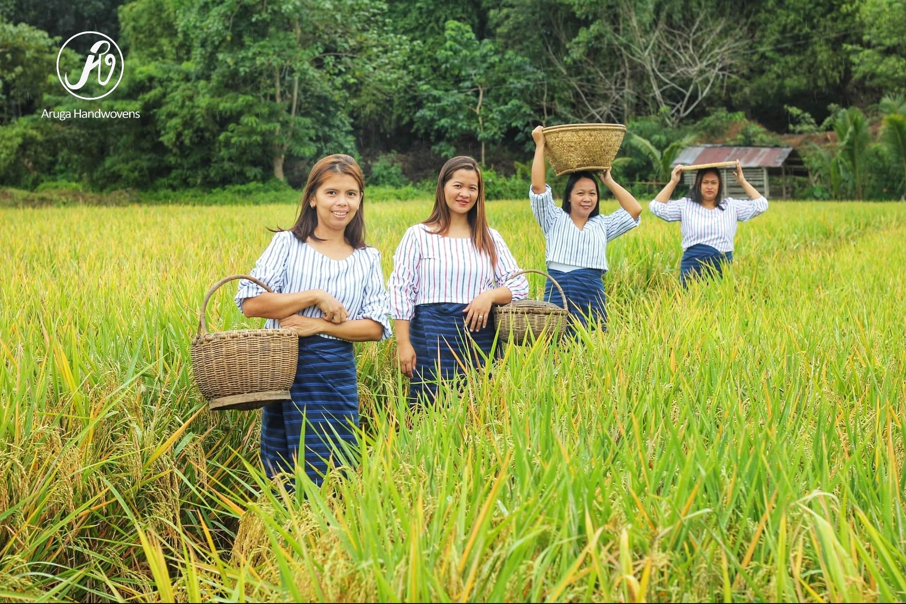

The Aruga Handwovens of the Isinai showcase the rich artistry and cultural heritage of the Isinai people of Dupax del Sur. Using traditional looms and weaving techniques, skilled artisans create beautifully patterned textiles that reflect both identity and tradition. Each woven piece carries stories of community, resilience, and craftsmanship passed down through generations. More than just fabric, these handwovens are a living expression of culture—preserving the legacy of the Isinai while promoting sustainable livelihoods and pride in local heritage.